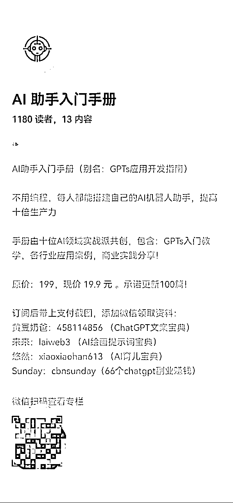
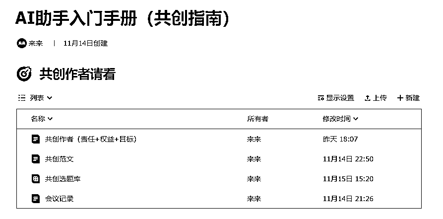
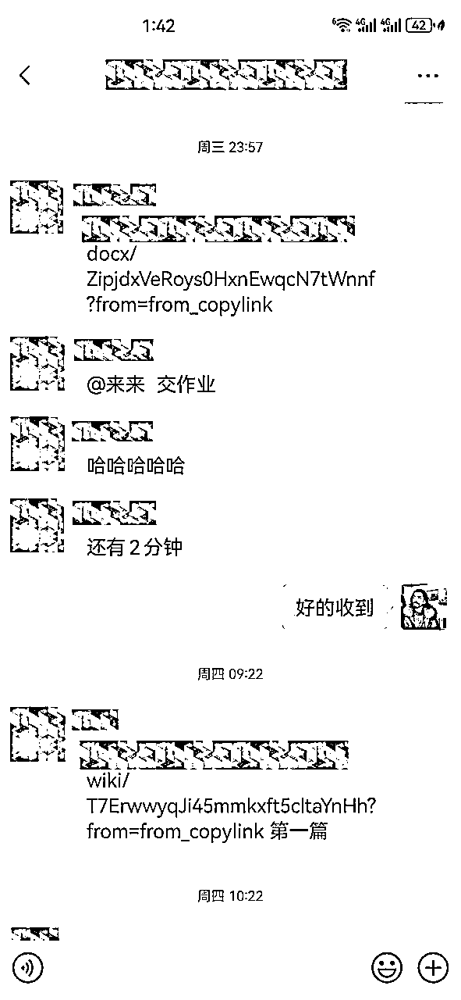
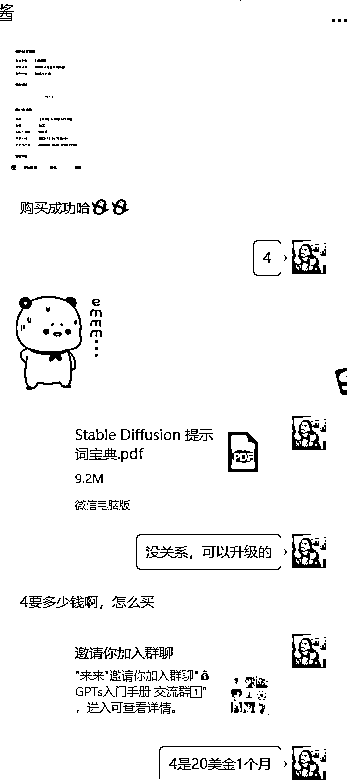

来源：https://duuxkmjwsy.feishu.cn/docx/R1PRd45cnoLYnzx1SNPcyJXQnpg
大家好！我是玩赚合伙人来来，20年设计经验，10年老师经验，玩赚将要12月举办的AI绘画训练营教练，生财有术AI绘画航海教练，破局俱乐部AI绘画航海教练，AI探索家成员，AI绘画图书作者，长江商学院特邀讲师，阿里巴巴集团银牌淘拍档。
本月底上市的AI绘画（独立撰写8万字400页）和AI提示词（和其他作者合作撰写）的图书封面，欢迎大家选购。
今天给大家分享我和合伙人@黄豆奶爸 如何在3天内完成从0到1000+单小报童专栏订阅，而且探索出一条玩赚合伙人共创产品、裂变流量、可复制可操作的合作样本。
黄豆奶爸介绍：前大厂大数据经理，辞职后全职奶爸，19 年躬身入局自媒体，小红书英语启蒙博主，3 个月 5 W 粉， 23 年入局人工智能创业，开发《ChatGPT 大师班》，三节课，圈外同学签约讲师，在线学员5000+
11月15号13点上线（截止0点销量244人，7篇内容）
11月16号（截止0点销量724人，9篇内容）
11月17号（截止0点销量1049人，10篇内容）
11月18号（截止0点销量1180人，13篇内容）


全文4000字，阅读时间 10分钟。
本文按照时间线排序类似爽文小说。来来按照时间线排序拆解了小报童发售的关键节点和细节；
对于后续玩赚合伙人合作以及合伙人共同发售小报童具有一定指导意义。
故事要从11月14号本周2中午11点半开始说起，黄豆奶爸玩赚合伙人群中介绍了GPTs搞钱攻略这个活动，GPTs诞生也才几天，来来其实也是想组织类似的活动，所以意外的相遇从这里就开始了。
于是我主动去联系了黄豆奶爸，说明了自己的想法，开始的时候还打算做一个训练营，但是交付过重，我们就以行业案例为主来组建一个GPTs的小报童。
接着我们就组建了小报童的共创群，群里展开了对小报童定位的热烈讨论。最后确认是以AI助手入门手册为名称，做入门教程配合行业变现案例，相对普世性更高，用户群体更多，而且刚好GPTs诞生不到1周，系统性的讲述GPTs的小报童是一片空白。
我们小报童黄豆奶爸写的置顶文章有一段话，我引用下用来解释下GPTs到底有什么价值或者作用。
提高生产力：为自己定制完整的私人助手。如果你是一个内容创作者，你可以结合过去的创作经验，将创作经验和你的私人知识库封装为一个写作助手，让大模型机器人基于你的数据库快速生产内容！
直接商业变现：为他人定制各个领域的AI专属助手。如果你非常擅长创作提示词，你也可以将你创作提示词的经验，为有需要的人创建一个定制化的GPT应用。
黄豆奶爸主动承担起设置小报童，填写小报童简介文章，介绍文章，置顶文章的撰写工作。

来来就开始调用前瞻和战略思维，系统性的梳理主理人或者项目后续会面临的问题，确认了几位主理人的职责分工+权益+目标，任务管理，物料汇总，群话术撰写，并统统形成了飞书文档
来来深知内容的重要性，毕竟后续会员逐渐增多的过程中，交付环节是非常重要的一环。我就主动筹划起组建共创作者团队的事情，去找了黄小刀，刀姐很爽快的就同意在AI探索家社群中招募共创者，毕竟AI探索家社群有很多AI方面的专家，而且之前我也和刀姐参与共创《GPT案例库》小报童，所以对于共创的内容丰富，效率之高，深有体会。毕竟我和黄豆奶爸写100篇GPTs的文章也是完全OK，但是效率相对低下，而且涉及行业比较单一，交付的速度也比较慢。
所以通过AI探索家，快速的当天就组织起一个10人的AI专家共创团队。这样可以保证每个作者写10篇的情况下，快速的完成高质量的100篇文章，而且是从不同行业的视角，因为都是各个领域的AI专家写的也非常专业。
当天晚上10位来自天南海北的AI专家，一起参加了一个小型的10分钟的共创会议，确认了共创作者可以获得权益，以及共创作者的责任，并开始了选题的接龙，当天晚上收到了共创作者的13条选题。黄豆奶爸晚上搞定了范文，给各位共创作者提供一个参考样板。在这里衷心谢谢各位共创作者，有你们一起成就了产品的内容交付，谢谢。
同时为了让共创作者对权益+责任，选题，范文有充分的了解。
来来撰写了共创指南。
黄豆奶爸负责督促各位共创者提交稿件，并审核，校对，备份好稿件，最后上传到小报童。

小报童今天刚审核通过，未上线，未发布内容，未有任何销量，核心是组建了强有力的的内容创作团队基础。
小报童周三中午13点正式上线，仅有1篇内容，我们开始鼓励各位共创者贡献内容。

各位共创作者开始陆续发布文章，黄豆奶爸贡献了2篇文章，来来贡献了1篇文章，其他共创者贡献了共3篇文章。加上置顶文章，小报童在第一天上线，诞生了7篇文章。
销量的冷启动要非常感谢玩赚创始人 @芷蓝的无私帮助，而且我们也获得了公众号教练@妞妞 的支持，再次深表感谢。今天销量完成244人，文章共7篇。
11月14号开始组建共创作者团队，经过2天的快速磨合，各位共创作者开始踊跃的提交GPTS相关的文章，我们也陆续都更新到小报童中。一来确保用户的交付内容有保障，二来我们也要充分保障各位创作者的权益，给共创作者每篇文章末尾都留了微信账号以及个人介绍。

这是订立的共创作者权益，当然也有责任和目标，牵扯商业机密就不便风险。
而且我们还提供了额外的权益给共创作者，我们从共创作者中选择出优秀的作者，添加到小报童到简介的封面上，这个位置堪称王者广告位。帮助作者充分获得私域流量。

内容问题搞定后，黄豆奶爸撰写了不同的朋友圈文案，来来启动了分销群撰写分销群公告，只要销售超过3单我们就拉入分销群，并且来来撰写了详尽的分销文档（左图所示），而且我们还提供了充足的长文案，短文案给分销作为素材使用（右图所示）。
除了基础的60%的分佣之外，我们还额外设置了更高级别的分销权益，作为给分销伙伴的一个激励。
来来提前设计了很多分销物料，分销的小伙伴只需要加上自己的二维码即可使用。
今天是小报童的第2天，用户也陆续加群。我和奶爸合作分工，我全力把用户引导加群并发送资料，奶爸开足马力撰写朋友圈文案，并且上传文章到小报童。

突破就是摸清了一套用户加上后的沟通心法，核心在于真心换真情，你要深刻理解每个头像后面都是真实的人，要用心去互动才能了解他的需求或者他的卡点，耐心的解释帮助他们走出自己的困境，自然会想着会找你来付费的。你用真心待人，他们会用付费作为对你的认可。
困难就是加人太多，比较耗费体力，后续我们会考虑用机器人来加人，但是机器人也有好有坏，效率虽然高，但是相对用户的体验是比较冰冷的没有人情味，也不可能有感情的和用户互动。我们权衡了利弊，前期我们还是决定还是人工来加微信，这样沟通比较好一些。
今天的战绩是截止到0点724人，今日新增480人，今天增加了2篇文章，
今天多亏了分销团队的共同努力，你们是最棒的。

经过昨天的努力，今天距离1000的目标还差200人，今天我和奶爸分头联系了很多在AI领域的大佬，帮我们分销，再次多谢各位大佬的鼎力帮助。这里也忠心感谢芷蓝大佬的推荐和引流。

虽然小报童1000人之前仅仅10元，现在也才19.9元。不管钱多钱少，用户就是我们的衣食父母。我们的交付从来不含糊，群内的小伙伴有问题，我和奶爸都会及时的解答，帮助用户。
经过大家的不懈努力首战告捷，顺利3天达到1000的销量，内容今天新增1篇达到10篇。
这里也有一些加入小报童的用户，因为我们交流群交付比较优质，也把这个小报童推荐给其他小伙伴，谢谢大家。
最后放上一个销量图作为结束。
如果各位玩赚合伙人/AI探索家需要分销小报童，请私聊联系来来